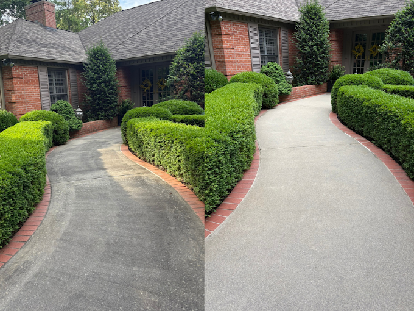

Clean Tek delivers real curb-appeal results across SEMO. We clean concrete, brick, siding (soft wash), decks, patios, sidewalks, and more — using the right method for the surface.

Built-up grime, algae, and stains can make concrete look old and neglected. We clean it safely and evenly for a crisp finish that looks professional.
The quickest way is to call. If you want, text photos of the area and we’ll give you an estimate.
Some surfaces shouldn’t be hit with high pressure. For siding and delicate areas, we use safer soft-wash methods to remove buildup without damage.
